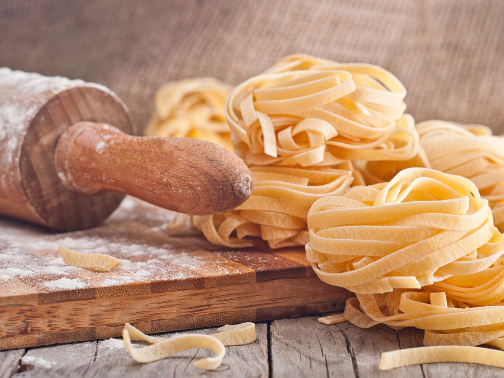

Pastas Caseras

Pasta Fresca Casera
Una receta tradicional Italiana para disfrutar con los que mas queremos!
Ingredientes
- 800 g Harina 00
- 200 g semolina
- 15 yemas
- 5 huevos enteros
Pasos
- En un bol grande poner toda la harina y semolina mezclada, hacer un agujero en el medio y meter 15 yemas y 5 huevos enteros
(ya mezclados preferentemente)~.
- Incorporar lentamente desde adentro hacia afuera
- Enrolla la masa en papel film y meter en heladera al menos una hora.
- Estamos buscando aproximadamente 2 mm de grosor ya sea con maquina o con palo de amasar.